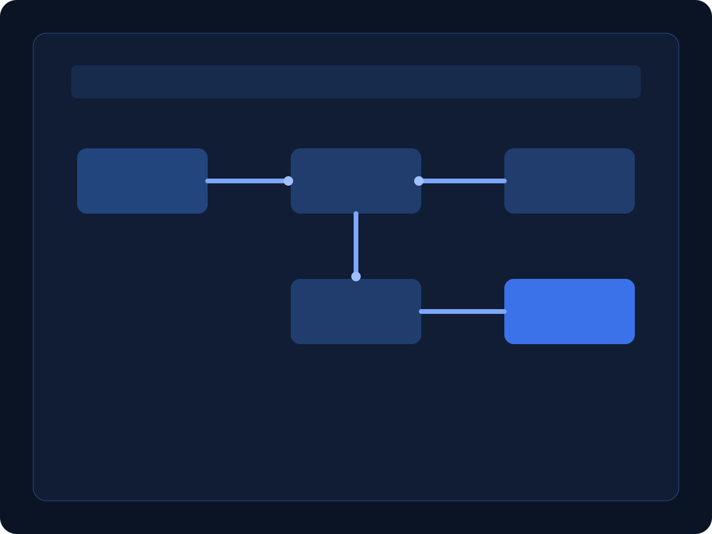

AI Automation Services in India for Growing Businesses
Our AI automation services in India are designed for teams that need faster response times, cleaner operations, and better lead conversion without adding manual effort.
How we implement automation
JactAI maps your current sales and operations flow, then builds practical automation layers that your team can use from day one. We connect website forms, WhatsApp inquiries, CRM updates, and follow-up sequences so no lead gets missed. Every workflow includes guardrails, human handoff points, and reporting visibility so business owners can trust outcomes. This approach works especially well for local service businesses, coaches, clinics, and real-estate teams handling high inquiry volume.
Real use cases
- Lead automation: capture inquiries, score intent, and route to the right team member in minutes.
- Sales follow-up automation: trigger reminders and message sequences for pending prospects.
- Operations automation: move tasks between teams with status updates and exception alerts.
- Customer support triage: classify incoming questions and assign priority with smart rules.
Business outcomes you can expect
Clients use these systems to reduce repetitive admin work, reply faster, and close more opportunities. Instead of copying data across tools, your team works in one connected process. Combined with our website development India service and chatbot development India setups, automation creates a full conversion funnel from first visit to closed deal.
Book automation call